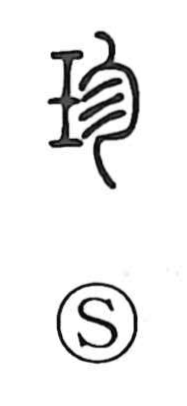

珍

Uncategorized
Kun: mezurashii | On: chin
rare ・ precious ・ curiosity
Explanation
In the oldest tortoise-plastron forms, this character pictured a shell carefully wrapped, evoking a prized object. In later script it became a phono-semantic compound: the jade radical supplies the meaning of treasure or preciousness, while the phonetic on the right belongs to the 㐱 series—graphically a figure with abundant hair—which contributes sound rather than sense. This series, recognizable by the element 今 as a sound marker, also appears in graphs like 趁 and supports the on reading chin. The Shuowen glosses it as “treasure,” specifically fine jade valued as a precious thing, from which the broader sense “rare, unusual” developed.